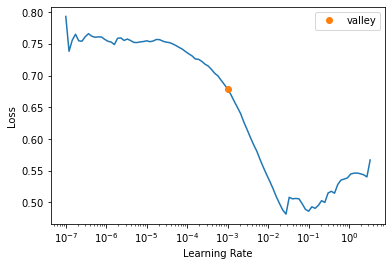
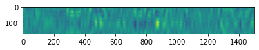
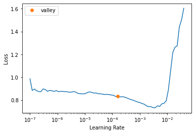
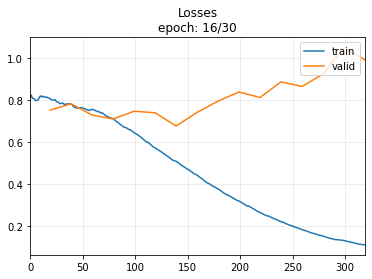
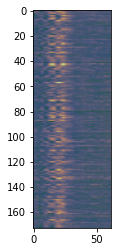
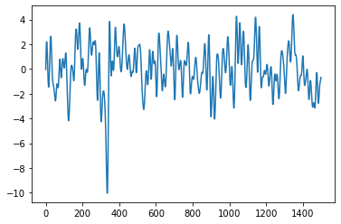
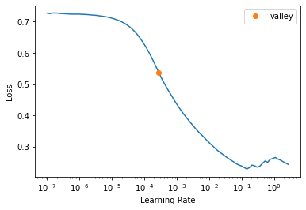
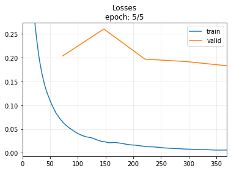
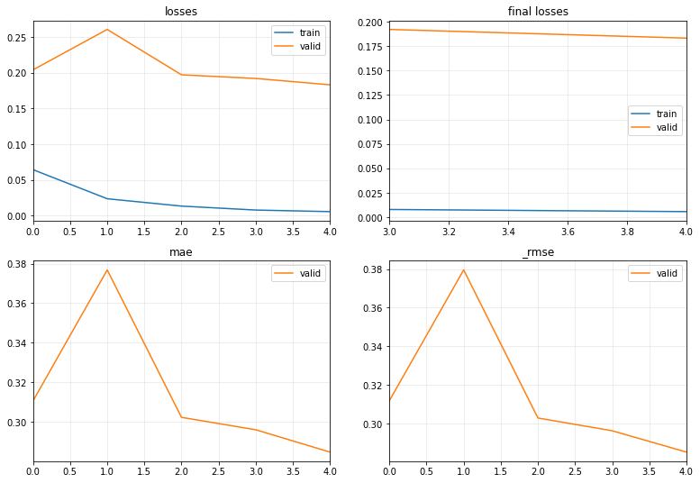

from monitosed.classification.core import *
from monitosed.data.core import *
from monitosed.models import *
from fastcore.xtras import Path
from tsai.all import *
from itertools import repeat
from IPython.display import clear_outputclassification.cnn
Fill in a module description here
users, labels = get_users_labels('../_data/Smarthy2_Behavioral.xlsx', drop_ixs=[0,2,7, 12, 13, 16])path = Path("../_data/foot1"); path.ls()(#3) [Path('../_data/foot1/Rest'),Path('../_data/foot1/VR'),Path('../_data/foot1/VR34_VRstim_data_clean.mat')]mats_rest = load_mats(path/"Rest")
mats_vr = load_mats(path/"VR")Loading: VR20_Reststim_data_clean.mat
Loading: VR23_RestStim_data_clean.mat
Loading: VR26_Reststim_data_clean.mat
Loading: VR27_Reststim_data_clean.mat
Loading: VR31_Reststim_data_clean.mat
Loading: VR35_RestStim_data_clean.mat
Loading: VR38_RestStim_data_clean.mat
Loading: VR40_RestStim_data_clean.mat
Loading: VR41_RestStim_data_clean.mat
Loading: VR51_RestStim_data_clean.mat
Loading: VR52_RestStim_data_clean.mat
Loading: VR57_Reststim_data_clean.mat
Loading: VR59_Reststim_data_clean.mat
Loading: VR60_Reststim_data_clean.mat
Loading: VR20_VRstim_data_clean.mat
Loading: VR23_VRStim_data_clean.mat
Loading: VR26_VRStim_data_clean.mat
Loading: VR27_VRstim_data_clean.mat
Loading: VR31_VRstim_data_clean.mat
Loading: VR35_VRStim_data_clean.mat
Loading: VR38_VRStim_data_clean.mat
Loading: VR40_VRstim_data_clean.mat
Loading: VR41_VRStim_data_clean.mat
Loading: VR51_VRStim_data_clean.mat
Loading: VR52_VRStim_data_clean.mat
Loading: VR57_VRstim_data_clean.mat
Loading: VR59_VRstim_data_clean.mat
Loading: VR60_VRstim_data_clean.matnp.stack(mats_rest[-1][‘data_clean’][‘trial’], axis=0).shape[0]+np.stack(mats_rest[-2][‘data_clean’][‘trial’], axis=0).shape[0]
np.stack(mats_vr[-1][‘data_clean’][‘trial’], axis=0).shape[0]+np.stack(mats_vr[-2][‘data_clean’][‘trial’], axis=0).shape[0]
n_fold = len(mats_rest)/2def run_kfold(arch, k, n_epochs=10, lr=1e-3):
accs = []
for i in range(int(n_fold)):
#model = StagerNet(channels=173, embed_dim=2)
print(f'Fold {i}')
data_rest = np.concatenate([read_data(mat) for mat in np.delete(mats_rest, np.arange(2*i, 2*i+2))])
data_vr = np.concatenate([read_data(mat) for mat in np.delete(mats_rest, np.arange(2*i, 2*i+2))])
print(f'Len of data rest: {len(data_rest)}')
print(f'Len of data VR: {len(data_vr)}')
data_rest_v = np.concatenate([read_data(mat) for mat in mats_rest[2*i:2*i+2]])
data_vr_v = np.concatenate([read_data(mat) for mat in mats_vr[2*i:2*i+2]])
print(f'Len of validation data rest: {len(data_rest_v)}')
print(f'Len of validation data VR: {len(data_vr_v)}')
X = torch.cat([torch.Tensor(data_rest), torch.Tensor(data_vr)])
X_v = torch.cat([torch.Tensor(data_rest_v), torch.Tensor(data_vr_v)])
y = list(repeat(0., data_rest.shape[0]))+list(repeat(1., data_vr.shape[0]))
y_v = list(repeat(0., data_rest_v.shape[0]))+list(repeat(1., data_vr_v.shape[0]))
tfms = [None, Categorize()]
dsets_train = TSDatasets(X, y, tfms=tfms)
dsets_valid = TSDatasets(X_v, y_v, tfms=tfms)
dls = TSDataLoaders.from_dsets(dsets_train,
dsets_valid,
bs=[64, 128],
batch_tfms=[TSNormalize(), TSToGASF(cmap='summer')],
shuffle=True)
model = create_model(arch, dls=dls, **k)
learn = ts_learner(dls, model, wd=1, metrics=accuracy)
learn.fit_one_cycle(n_epochs, lr)
accs.append(learn.recorder.values[-1][-1])
return accsstgnet = StagerNet(channels=173, embed_dim=2)accs = run_kfold(n_epochs=30, lr=1e-3)Fold 0
Len of data rest: 666
Len of data VR: 666
Len of validation data rest: 112
Len of validation data VR: 114
Fold 1
Len of data rest: 663
Len of data VR: 663
Len of validation data rest: 115
Len of validation data VR: 117
Fold 2
Len of data rest: 669
Len of data VR: 669
Len of validation data rest: 109
Len of validation data VR: 110
Fold 3
Len of data rest: 670
Len of data VR: 670
Len of validation data rest: 108
Len of validation data VR: 111
Fold 4
Len of data rest: 678
Len of data VR: 678
Len of validation data rest: 100
Len of validation data VR: 106
Fold 5
Len of data rest: 664
Len of data VR: 664
Len of validation data rest: 114
Len of validation data VR: 114
Fold 6
Len of data rest: 658
Len of data VR: 658
Len of validation data rest: 120
Len of validation data VR: 123| epoch | train_loss | valid_loss | accuracy | time |
|---|---|---|---|---|
| 0 | 0.702421 | 0.695994 | 0.504425 | 00:04 |
| 1 | 0.701286 | 0.698188 | 0.504425 | 00:04 |
| 2 | 0.702113 | 0.700154 | 0.495575 | 00:04 |
| 3 | 0.702188 | 1.455414 | 0.495575 | 00:04 |
| 4 | 0.702619 | 0.836042 | 0.504425 | 00:04 |
| 5 | 0.702225 | 0.809931 | 0.486726 | 00:04 |
| 6 | 0.703992 | 0.713080 | 0.500000 | 00:04 |
| 7 | 0.702361 | 0.692285 | 0.513274 | 00:04 |
| 8 | 0.702203 | 0.704703 | 0.500000 | 00:04 |
| 9 | 0.702266 | 0.697316 | 0.504425 | 00:04 |
| 10 | 0.701039 | 0.691921 | 0.526549 | 00:04 |
| 11 | 0.699699 | 0.700926 | 0.504425 | 00:04 |
| 12 | 0.698996 | 0.693802 | 0.491150 | 00:04 |
| 13 | 0.697979 | 0.691042 | 0.522124 | 00:04 |
| 14 | 0.696966 | 0.692313 | 0.504425 | 00:04 |
| 15 | 0.696966 | 0.691706 | 0.561947 | 00:04 |
| 16 | 0.696405 | 0.695152 | 0.455752 | 00:04 |
| 17 | 0.696080 | 0.694191 | 0.504425 | 00:04 |
| 18 | 0.695984 | 0.692799 | 0.495575 | 00:04 |
| 19 | 0.696295 | 0.693860 | 0.504425 | 00:04 |
| 20 | 0.696610 | 0.691729 | 0.615044 | 00:04 |
| 21 | 0.695703 | 0.692805 | 0.513274 | 00:04 |
| 22 | 0.695050 | 0.692189 | 0.584071 | 00:04 |
| 23 | 0.694538 | 0.692527 | 0.557522 | 00:04 |
| 24 | 0.694260 | 0.693103 | 0.522124 | 00:04 |
| 25 | 0.694090 | 0.692472 | 0.504425 | 00:04 |
| 26 | 0.693822 | 0.692468 | 0.504425 | 00:04 |
| 27 | 0.693675 | 0.692480 | 0.495575 | 00:04 |
| 28 | 0.693540 | 0.692489 | 0.500000 | 00:04 |
| 29 | 0.693406 | 0.692493 | 0.500000 | 00:04 |
| epoch | train_loss | valid_loss | accuracy | time |
|---|---|---|---|---|
| 0 | 0.705362 | 0.695391 | 0.495690 | 00:04 |
| 1 | 0.703890 | 0.696072 | 0.504310 | 00:04 |
| 2 | 0.702967 | 0.690503 | 0.573276 | 00:04 |
| 3 | 0.702771 | 0.835396 | 0.495690 | 00:04 |
| 4 | 0.702550 | 0.830462 | 0.495690 | 00:04 |
| 5 | 0.702506 | 0.980396 | 0.504310 | 00:04 |
| 6 | 0.703779 | 0.706427 | 0.456897 | 00:04 |
| 7 | 0.702726 | 0.712891 | 0.495690 | 00:04 |
| 8 | 0.701285 | 0.681614 | 0.500000 | 00:04 |
| 9 | 0.700513 | 0.691622 | 0.491379 | 00:04 |
| 10 | 0.699458 | 0.693044 | 0.534483 | 00:04 |
| 11 | 0.698818 | 0.692982 | 0.543103 | 00:04 |
| 12 | 0.697972 | 0.679437 | 0.495690 | 00:04 |
| 13 | 0.698998 | 0.722605 | 0.504310 | 00:04 |
| 14 | 0.698414 | 0.690077 | 0.495690 | 00:04 |
| 15 | 0.698309 | 0.689105 | 0.495690 | 00:04 |
| 16 | 0.698019 | 0.690534 | 0.495690 | 00:04 |
| 17 | 0.697574 | 0.695121 | 0.487069 | 00:04 |
| 18 | 0.697652 | 0.692056 | 0.495690 | 00:04 |
| 19 | 0.696638 | 0.691193 | 0.607759 | 00:04 |
| 20 | 0.695961 | 0.695159 | 0.500000 | 00:04 |
| 21 | 0.695872 | 0.692417 | 0.495690 | 00:04 |
| 22 | 0.695112 | 0.694647 | 0.487069 | 00:04 |
| 23 | 0.694626 | 0.694427 | 0.474138 | 00:04 |
| 24 | 0.694257 | 0.693343 | 0.530172 | 00:04 |
| 25 | 0.693908 | 0.692702 | 0.530172 | 00:04 |
| 26 | 0.693682 | 0.692541 | 0.491379 | 00:04 |
| 27 | 0.693536 | 0.692495 | 0.491379 | 00:04 |
| 28 | 0.693447 | 0.692542 | 0.491379 | 00:04 |
| 29 | 0.693391 | 0.692546 | 0.491379 | 00:04 |
| epoch | train_loss | valid_loss | accuracy | time |
|---|---|---|---|---|
| 0 | 0.702109 | 0.700234 | 0.502283 | 00:04 |
| 1 | 0.700991 | 0.708766 | 0.502283 | 00:04 |
| 2 | 0.703673 | 0.705469 | 0.356164 | 00:04 |
| 3 | 0.704165 | 0.688191 | 0.589041 | 00:04 |
| 4 | 0.704845 | 0.726403 | 0.616438 | 00:04 |
| 5 | 0.704729 | 0.736976 | 0.424658 | 00:04 |
| 6 | 0.704563 | 0.684895 | 0.538813 | 00:04 |
| 7 | 0.704592 | 0.733078 | 0.502283 | 00:04 |
| 8 | 0.702183 | 0.706152 | 0.497717 | 00:04 |
| 9 | 0.701236 | 0.699713 | 0.506849 | 00:04 |
| 10 | 0.700172 | 0.699485 | 0.484018 | 00:04 |
| 11 | 0.699017 | 0.698990 | 0.484018 | 00:04 |
| 12 | 0.698100 | 0.698093 | 0.333333 | 00:04 |
| 13 | 0.697331 | 0.695976 | 0.488584 | 00:04 |
| 14 | 0.696824 | 0.692744 | 0.497717 | 00:04 |
| 15 | 0.697570 | 0.699137 | 0.502283 | 00:04 |
| 16 | 0.696838 | 0.693033 | 0.497717 | 00:04 |
| 17 | 0.696830 | 0.693787 | 0.502283 | 00:04 |
| 18 | 0.696250 | 0.689165 | 0.502283 | 00:04 |
| 19 | 0.696249 | 0.696960 | 0.502283 | 00:04 |
| 20 | 0.695764 | 0.694301 | 0.461187 | 00:04 |
| 21 | 0.695467 | 0.691431 | 0.511416 | 00:04 |
| 22 | 0.694932 | 0.694517 | 0.479452 | 00:04 |
| 23 | 0.695127 | 0.697800 | 0.502283 | 00:04 |
| 24 | 0.694679 | 0.694527 | 0.442922 | 00:04 |
| 25 | 0.694280 | 0.694589 | 0.447489 | 00:04 |
| 26 | 0.694017 | 0.694186 | 0.447489 | 00:04 |
| 27 | 0.693768 | 0.694543 | 0.429224 | 00:04 |
| 28 | 0.693618 | 0.694589 | 0.415525 | 00:04 |
| 29 | 0.693515 | 0.694574 | 0.406393 | 00:04 |
| epoch | train_loss | valid_loss | accuracy | time |
|---|---|---|---|---|
| 0 | 0.702449 | 0.693760 | 0.506849 | 00:04 |
| 1 | 0.701047 | 0.694500 | 0.424658 | 00:04 |
| 2 | 0.701590 | 0.732912 | 0.497717 | 00:04 |
| 3 | 0.707960 | 0.741218 | 0.506849 | 00:04 |
| 4 | 0.708563 | 0.746860 | 0.493151 | 00:04 |
| 5 | 0.705459 | 0.886797 | 0.506849 | 00:04 |
| 6 | 0.702254 | 0.769776 | 0.493151 | 00:04 |
| 7 | 0.700919 | 0.729812 | 0.493151 | 00:04 |
| 8 | 0.703937 | 0.686278 | 0.493151 | 00:04 |
| 9 | 0.702285 | 0.695131 | 0.497717 | 00:04 |
| 10 | 0.700765 | 0.690257 | 0.520548 | 00:04 |
| 11 | 0.700668 | 0.685773 | 0.493151 | 00:04 |
| 12 | 0.699680 | 0.696562 | 0.442922 | 00:04 |
| 13 | 0.698984 | 0.703542 | 0.506849 | 00:04 |
| 14 | 0.697741 | 0.679054 | 0.525114 | 00:04 |
| 15 | 0.697464 | 0.697994 | 0.506849 | 00:04 |
| 16 | 0.697144 | 0.694326 | 0.497717 | 00:04 |
| 17 | 0.696561 | 0.689429 | 0.493151 | 00:04 |
| 18 | 0.696457 | 0.697427 | 0.506849 | 00:04 |
| 19 | 0.695993 | 0.694517 | 0.470320 | 00:04 |
| 20 | 0.695589 | 0.695398 | 0.506849 | 00:04 |
| 21 | 0.695005 | 0.692362 | 0.575342 | 00:04 |
| 22 | 0.694587 | 0.693475 | 0.502283 | 00:04 |
| 23 | 0.694308 | 0.693878 | 0.461187 | 00:04 |
| 24 | 0.694001 | 0.691688 | 0.511416 | 00:04 |
| 25 | 0.693874 | 0.690910 | 0.493151 | 00:04 |
| 26 | 0.693730 | 0.692194 | 0.493151 | 00:04 |
| 27 | 0.693588 | 0.692694 | 0.497717 | 00:04 |
| 28 | 0.693485 | 0.692998 | 0.497717 | 00:04 |
| 29 | 0.693362 | 0.693042 | 0.502283 | 00:04 |
| epoch | train_loss | valid_loss | accuracy | time |
|---|---|---|---|---|
| 0 | 0.701843 | 0.688055 | 0.514563 | 00:04 |
| 1 | 0.702267 | 0.686159 | 0.519417 | 00:04 |
| 2 | 0.703704 | 0.697039 | 0.514563 | 00:04 |
| 3 | 0.702302 | 1.077913 | 0.485437 | 00:04 |
| 4 | 0.705226 | 1.752952 | 0.514563 | 00:04 |
| 5 | 0.705995 | 0.876490 | 0.446602 | 00:04 |
| 6 | 0.705504 | 0.686981 | 0.582524 | 00:04 |
| 7 | 0.705263 | 0.721490 | 0.427184 | 00:04 |
| 8 | 0.703035 | 0.689355 | 0.514563 | 00:04 |
| 9 | 0.702967 | 0.695125 | 0.441748 | 00:04 |
| 10 | 0.701922 | 0.687943 | 0.601942 | 00:04 |
| 11 | 0.700365 | 0.693493 | 0.514563 | 00:04 |
| 12 | 0.699007 | 0.706160 | 0.485437 | 00:04 |
| 13 | 0.698584 | 0.691846 | 0.567961 | 00:04 |
| 14 | 0.697725 | 0.689283 | 0.635922 | 00:04 |
| 15 | 0.696725 | 0.692509 | 0.514563 | 00:04 |
| 16 | 0.696577 | 0.689832 | 0.514563 | 00:04 |
| 17 | 0.696692 | 0.691606 | 0.485437 | 00:04 |
| 18 | 0.695923 | 0.689485 | 0.514563 | 00:04 |
| 19 | 0.695909 | 0.691038 | 0.514563 | 00:04 |
| 20 | 0.695430 | 0.690500 | 0.635922 | 00:04 |
| 21 | 0.695100 | 0.689937 | 0.529126 | 00:04 |
| 22 | 0.694596 | 0.690664 | 0.723301 | 00:04 |
| 23 | 0.694301 | 0.691148 | 0.538835 | 00:04 |
| 24 | 0.694045 | 0.691076 | 0.519417 | 00:04 |
| 25 | 0.693809 | 0.691580 | 0.519417 | 00:04 |
| 26 | 0.693631 | 0.691785 | 0.626214 | 00:04 |
| 27 | 0.693483 | 0.691729 | 0.640777 | 00:04 |
| 28 | 0.693378 | 0.691685 | 0.597087 | 00:04 |
| 29 | 0.693300 | 0.691685 | 0.592233 | 00:04 |
| epoch | train_loss | valid_loss | accuracy | time |
|---|---|---|---|---|
| 0 | 0.702997 | 0.697219 | 0.500000 | 00:04 |
| 1 | 0.701350 | 0.694665 | 0.473684 | 00:04 |
| 2 | 0.703098 | 0.735154 | 0.500000 | 00:04 |
| 3 | 0.705869 | 0.705668 | 0.473684 | 00:04 |
| 4 | 0.706337 | 0.751872 | 0.495614 | 00:04 |
| 5 | 0.707048 | 0.699203 | 0.504386 | 00:04 |
| 6 | 0.705394 | 0.706065 | 0.508772 | 00:04 |
| 7 | 0.704213 | 0.753733 | 0.500000 | 00:04 |
| 8 | 0.705419 | 0.695870 | 0.500000 | 00:04 |
| 9 | 0.703452 | 0.701260 | 0.500000 | 00:04 |
| 10 | 0.703303 | 0.689038 | 0.530702 | 00:04 |
| 11 | 0.702561 | 0.712855 | 0.500000 | 00:04 |
| 12 | 0.701138 | 0.727634 | 0.500000 | 00:04 |
| 13 | 0.700200 | 0.695763 | 0.500000 | 00:04 |
| 14 | 0.699595 | 0.705400 | 0.500000 | 00:04 |
| 15 | 0.699008 | 0.695269 | 0.451754 | 00:04 |
| 16 | 0.697815 | 0.691670 | 0.548246 | 00:04 |
| 17 | 0.697379 | 0.697443 | 0.500000 | 00:04 |
| 18 | 0.696763 | 0.693031 | 0.500000 | 00:04 |
| 19 | 0.696098 | 0.691666 | 0.600877 | 00:04 |
| 20 | 0.695442 | 0.691016 | 0.548246 | 00:04 |
| 21 | 0.695123 | 0.690330 | 0.539474 | 00:04 |
| 22 | 0.694699 | 0.691418 | 0.605263 | 00:04 |
| 23 | 0.694396 | 0.692437 | 0.508772 | 00:04 |
| 24 | 0.694054 | 0.692412 | 0.504386 | 00:04 |
| 25 | 0.693834 | 0.692077 | 0.587719 | 00:04 |
| 26 | 0.693676 | 0.691936 | 0.596491 | 00:04 |
| 27 | 0.693542 | 0.691941 | 0.596491 | 00:04 |
| 28 | 0.693415 | 0.692007 | 0.614035 | 00:04 |
| 29 | 0.693341 | 0.692005 | 0.609649 | 00:04 |
| epoch | train_loss | valid_loss | accuracy | time |
|---|---|---|---|---|
| 0 | 0.704846 | 0.692812 | 0.493827 | 00:04 |
| 1 | 0.703574 | 0.693361 | 0.485597 | 00:04 |
| 2 | 0.704332 | 0.692235 | 0.506173 | 00:04 |
| 3 | 0.706557 | 0.926075 | 0.506173 | 00:04 |
| 4 | 0.706899 | 0.773525 | 0.477366 | 00:04 |
| 5 | 0.710077 | 0.677513 | 0.547325 | 00:04 |
| 6 | 0.708971 | 0.712915 | 0.506173 | 00:04 |
| 7 | 0.706644 | 0.723837 | 0.493827 | 00:04 |
| 8 | 0.704705 | 0.701263 | 0.497942 | 00:04 |
| 9 | 0.702386 | 0.691429 | 0.506173 | 00:04 |
| 10 | 0.703270 | 0.696334 | 0.510288 | 00:04 |
| 11 | 0.701397 | 0.695224 | 0.493827 | 00:04 |
| 12 | 0.700435 | 0.695506 | 0.506173 | 00:04 |
| 13 | 0.699108 | 0.696166 | 0.493827 | 00:04 |
| 14 | 0.698108 | 0.695509 | 0.510288 | 00:04 |
| 15 | 0.697416 | 0.693331 | 0.485597 | 00:04 |
| 16 | 0.696899 | 0.694771 | 0.444444 | 00:04 |
| 17 | 0.696432 | 0.696039 | 0.502058 | 00:04 |
| 18 | 0.696620 | 0.693769 | 0.493827 | 00:04 |
| 19 | 0.696653 | 0.694761 | 0.460905 | 00:04 |
| 20 | 0.696592 | 0.695613 | 0.497942 | 00:04 |
| 21 | 0.695688 | 0.694196 | 0.456790 | 00:04 |
| 22 | 0.695147 | 0.693994 | 0.489712 | 00:04 |
| 23 | 0.694675 | 0.694014 | 0.481481 | 00:04 |
| 24 | 0.694354 | 0.694421 | 0.444444 | 00:04 |
| 25 | 0.694013 | 0.694222 | 0.481481 | 00:04 |
| 26 | 0.693779 | 0.694085 | 0.497942 | 00:04 |
| 27 | 0.693590 | 0.694183 | 0.485597 | 00:04 |
| 28 | 0.693463 | 0.694179 | 0.469136 | 00:04 |
| 29 | 0.693358 | 0.694189 | 0.465021 | 00:04 |
accs[0.5,
0.4913793206214905,
0.4063926935195923,
0.5022830963134766,
0.5922330021858215,
0.609649121761322,
0.4650205671787262]np.mean(accs), np.std(accs)(0.5095654002257756, 0.06541602644789596)i=0data_rest = np.concatenate([read_data(mat) for mat in np.delete(mats_rest, np.arange(2*i, 2*i+2))])
data_vr = np.concatenate([read_data(mat) for mat in np.delete(mats_rest, np.arange(2*i, 2*i+2))])
print(f'Len of data rest: {len(data_rest)}')
print(f'Len of data VR: {len(data_vr)}')
data_rest_v = np.concatenate([read_data(mat) for mat in mats_rest[2*i:2*i+2]])
data_vr_v = np.concatenate([read_data(mat) for mat in mats_vr[2*i:2*i+2]])
print(f'Len of validation data rest: {len(data_rest_v)}')
print(f'Len of validation data VR: {len(data_vr_v)}')
X = torch.cat([torch.Tensor(data_rest), torch.Tensor(data_vr)])
X_v = torch.cat([torch.Tensor(data_rest_v), torch.Tensor(data_vr_v)])
y = list(repeat(0., data_rest.shape[0]))+list(repeat(1., data_vr.shape[0]))
y_v = list(repeat(0., data_rest_v.shape[0]))+list(repeat(1., data_vr_v.shape[0]))
tfms = [None, Categorize()]
dsets_train = TSDatasets(X, y, tfms=tfms)
dsets_valid = TSDatasets(X_v, y_v, tfms=tfms)
dls = TSDataLoaders.from_dsets(dsets_train,
dsets_valid,
bs=[64, 128],
batch_tfms=[TSNormalize(), TSToGASF(cmap='summer')],
shuffle=True)
learn = ts_learner(dls, stgnet, wd=1, metrics=accuracy)
learn.fit_one_cycle(10, 1e-4)Len of data rest: 666
Len of data VR: 666
Len of validation data rest: 112
Len of validation data VR: 114| epoch | train_loss | valid_loss | accuracy | time |
|---|---|---|---|---|
| 0 | 0.716926 | 0.713491 | 0.491150 | 00:03 |
| 1 | 0.720461 | 0.725461 | 0.553097 | 00:03 |
| 2 | 0.729884 | 0.661030 | 0.606195 | 00:03 |
| 3 | 0.737751 | 0.660194 | 0.637168 | 00:03 |
| 4 | 0.742483 | 0.709350 | 0.530973 | 00:03 |
| 5 | 0.736911 | 0.726843 | 0.495575 | 00:03 |
| 6 | 0.733057 | 0.709912 | 0.495575 | 00:03 |
| 7 | 0.731455 | 0.718297 | 0.486726 | 00:03 |
| 8 | 0.726464 | 0.729451 | 0.530973 | 00:03 |
| 9 | 0.725285 | 0.717606 | 0.513274 | 00:03 |
learn.recorder.values[-1][-1]0.5132743120193481stgnet = partial(StagerNet, channels=173, embed_dim=2)stgnet.__name__ = 'stgnet'archs = [(mWDN, {'levels': 4}), (FCN, {}), (ResNet, {}), (xresnet1d34, {}), (ResCNN, {}), (InceptionTime, {}), (XceptionTime, {}),
(LSTM, {'n_layers':1, 'bidirectional': False}), (LSTM, {'n_layers':2, 'bidirectional': False}), (LSTM, {'n_layers':3, 'bidirectional': False}),
(LSTM, {'n_layers':1, 'bidirectional': True}), (LSTM, {'n_layers':2, 'bidirectional': True}),
(LSTM_FCN, {}), (LSTM_FCN, {'shuffle': False})]
results = pd.DataFrame(columns=['arch', 'hyperparams', 'total params', 'mean accuracy', 'std accuracy', 'time'])
for i, (arch, k) in enumerate(archs):
print(model.__class__.__name__)
accs = run_kfold(arch, k, n_epochs=30)
#learn = Learner(dls, model, wd=0.1, metrics=accuracy)
start = time.time()
#learn.fit_one_cycle(30, 1e-3)
elapsed = time.time() - start
#vals = learn.recorder.values[-1]
results.loc[i] = [arch.__name__, k, count_parameters(model), np.mean(accs), np.std(accs), int(elapsed)]
results.sort_values(by='mean accuracy', ascending=False, kind='stable', ignore_index=True, inplace=True)
clear_output()
display(results)| arch | hyperparams | total params | mean accuracy | std accuracy | time | |
|---|---|---|---|---|---|---|
| 0 | mWDN | {'levels': 4} | 6469942 | 0.535218 | 0.077116 | 0 |
| 1 | FCN | {} | 6469942 | 0.482316 | 0.045060 | 0 |
mWDN
Fold 0
Len of data rest: 666
Len of data VR: 666
Len of validation data rest: 112
Len of validation data VR: 114
Fold 1
Len of data rest: 663
Len of data VR: 663
Len of validation data rest: 115
Len of validation data VR: 117
Fold 2
Len of data rest: 669
Len of data VR: 669
Len of validation data rest: 109
Len of validation data VR: 110
Fold 3
Len of data rest: 670
Len of data VR: 670
Len of validation data rest: 108
Len of validation data VR: 111
Fold 4| epoch | train_loss | valid_loss | accuracy | time |
|---|---|---|---|---|
| 0 | 0.707200 | 0.701268 | 0.402655 | 00:02 |
| 1 | 0.703355 | 0.745684 | 0.504425 | 00:02 |
| 2 | 0.703672 | 0.669767 | 0.495575 | 00:02 |
| 3 | 0.703532 | 0.709207 | 0.495575 | 00:02 |
| 4 | 0.704467 | 0.676107 | 0.495575 | 00:02 |
| 5 | 0.707008 | 0.752433 | 0.500000 | 00:02 |
| 6 | 0.706082 | 0.704095 | 0.495575 | 00:02 |
| 7 | 0.704355 | 0.684261 | 0.495575 | 00:02 |
| 8 | 0.701501 | 0.686508 | 0.495575 | 00:02 |
| 9 | 0.700122 | 0.686363 | 0.513274 | 00:02 |
| 10 | 0.698892 | 0.696161 | 0.495575 | 00:02 |
| 11 | 0.698424 | 0.698052 | 0.491150 | 00:02 |
| 12 | 0.697715 | 0.691382 | 0.504425 | 00:02 |
| 13 | 0.696120 | 0.683805 | 0.495575 | 00:02 |
| 14 | 0.695960 | 0.697070 | 0.504425 | 00:02 |
| 15 | 0.695562 | 0.691002 | 0.495575 | 00:02 |
| 16 | 0.695179 | 0.686288 | 0.495575 | 00:02 |
| 17 | 0.695154 | 0.688773 | 0.513274 | 00:02 |
| 18 | 0.695546 | 0.691643 | 0.504425 | 00:02 |
| 19 | 0.695129 | 0.690913 | 0.557522 | 00:02 |
| 20 | 0.694672 | 0.688998 | 0.495575 | 00:02 |
| 21 | 0.694289 | 0.691027 | 0.716814 | 00:02 |
| 22 | 0.694036 | 0.692353 | 0.637168 | 00:02 |
| 23 | 0.693896 | 0.692860 | 0.486726 | 00:02 |
| 24 | 0.693684 | 0.692004 | 0.491150 | 00:02 |
| 25 | 0.693523 | 0.691803 | 0.491150 | 00:02 |
| 26 | 0.693424 | 0.691488 | 0.495575 | 00:02 |
| 27 | 0.693336 | 0.691673 | 0.495575 | 00:02 |
| 28 | 0.693332 | 0.691698 | 0.500000 | 00:02 |
| 29 | 0.693286 | 0.691744 | 0.500000 | 00:02 |
| epoch | train_loss | valid_loss | accuracy | time |
|---|---|---|---|---|
| 0 | 0.701312 | 0.688654 | 0.500000 | 00:02 |
| 1 | 0.701392 | 0.679508 | 0.508621 | 00:02 |
| 2 | 0.704031 | 0.696105 | 0.500000 | 00:02 |
| 3 | 0.704855 | 0.689063 | 0.495690 | 00:02 |
| 4 | 0.705128 | 0.713636 | 0.504310 | 00:02 |
| 5 | 0.705451 | 0.666304 | 0.521552 | 00:02 |
| 6 | 0.705023 | 0.703801 | 0.495690 | 00:02 |
| 7 | 0.703736 | 0.683261 | 0.849138 | 00:02 |
| 8 | 0.701125 | 0.699328 | 0.478448 | 00:02 |
| 9 | 0.699625 | 0.699614 | 0.504310 | 00:02 |
| 10 | 0.699265 | 0.691793 | 0.521552 | 00:02 |
| 11 | 0.698243 | 0.698501 | 0.495690 | 00:02 |
| 12 | 0.698085 | 0.692975 | 0.495690 | 00:02 |
| 13 | 0.696716 | 0.696118 | 0.504310 | 00:02 |
| 14 | 0.696385 | 0.697393 | 0.495690 | 00:02 |
| 15 | 0.696154 | 0.696486 | 0.504310 | 00:02 |
| 16 | 0.695745 | 0.692548 | 0.500000 | 00:02 |
| 17 | 0.695132 | 0.691024 | 0.512931 | 00:02 |
| 18 | 0.694832 | 0.691406 | 0.603448 | 00:02 |
| 19 | 0.694891 | 0.693253 | 0.504310 | 00:02 |
| 20 | 0.694362 | 0.692582 | 0.495690 | 00:02 |
| 21 | 0.694408 | 0.691990 | 0.538793 | 00:02 |
| 22 | 0.694152 | 0.690959 | 0.525862 | 00:02 |
| 23 | 0.694008 | 0.691131 | 0.512931 | 00:02 |
| 24 | 0.693813 | 0.691733 | 0.607759 | 00:02 |
| 25 | 0.693635 | 0.692239 | 0.573276 | 00:02 |
| 26 | 0.693493 | 0.692168 | 0.655172 | 00:02 |
| 27 | 0.693406 | 0.692237 | 0.629310 | 00:02 |
| 28 | 0.693342 | 0.692257 | 0.637931 | 00:02 |
| 29 | 0.693306 | 0.692263 | 0.633621 | 00:02 |
| epoch | train_loss | valid_loss | accuracy | time |
|---|---|---|---|---|
| 0 | 0.701420 | 0.703869 | 0.479452 | 00:02 |
| 1 | 0.700859 | 0.700426 | 0.433790 | 00:02 |
| 2 | 0.703134 | 0.725723 | 0.438356 | 00:02 |
| 3 | 0.703719 | 0.697979 | 0.397260 | 00:02 |
| 4 | 0.704392 | 0.663118 | 0.502283 | 00:02 |
| 5 | 0.704931 | 0.799299 | 0.479452 | 00:02 |
| 6 | 0.704164 | 0.691390 | 0.534247 | 00:02 |
| 7 | 0.702477 | 0.679886 | 0.502283 | 00:02 |
| 8 | 0.701891 | 0.685603 | 0.497717 | 00:02 |
| 9 | 0.700315 | 0.695544 | 0.502283 | 00:02 |
| 10 | 0.698466 | 0.708580 | 0.520548 | 00:02 |
| 11 | 0.697624 | 0.683548 | 0.497717 | 00:02 |
| 12 | 0.697327 | 0.690109 | 0.520548 | 00:02 |
| 13 | 0.696858 | 0.692917 | 0.470320 | 00:02 |
| 14 | 0.697124 | 0.694180 | 0.502283 | 00:02 |
| 15 | 0.696563 | 0.696277 | 0.484018 | 00:02 |
| 16 | 0.695876 | 0.698357 | 0.502283 | 00:02 |
| 17 | 0.695412 | 0.686228 | 0.497717 | 00:02 |
| 18 | 0.695390 | 0.703401 | 0.484018 | 00:02 |
| 19 | 0.694856 | 0.688293 | 0.525114 | 00:02 |
| 20 | 0.695180 | 0.693022 | 0.484018 | 00:02 |
| 21 | 0.695081 | 0.685958 | 0.497717 | 00:02 |
| 22 | 0.694670 | 0.702360 | 0.502283 | 00:02 |
| 23 | 0.694321 | 0.699435 | 0.502283 | 00:02 |
| 24 | 0.694068 | 0.693388 | 0.470320 | 00:02 |
| 25 | 0.693942 | 0.689235 | 0.484018 | 00:02 |
| 26 | 0.693743 | 0.692295 | 0.447489 | 00:02 |
| 27 | 0.693552 | 0.692783 | 0.493151 | 00:02 |
| 28 | 0.693467 | 0.692380 | 0.479452 | 00:02 |
| 29 | 0.693397 | 0.692491 | 0.474886 | 00:02 |
| epoch | train_loss | valid_loss | accuracy | time |
|---|---|---|---|---|
| 0 | 0.705132 | 0.678527 | 0.753425 | 00:02 |
| 1 | 0.702746 | 0.687064 | 0.488584 | 00:02 |
| 2 | 0.705506 | 0.677194 | 0.515982 | 00:02 |
| 3 | 0.705989 | 0.675951 | 0.666667 | 00:02 |
| 4 | 0.706232 | 0.763779 | 0.506849 | 00:02 |
| 5 | 0.705641 | 0.680605 | 0.675799 | 00:02 |
| 6 | 0.705789 | 0.699037 | 0.506849 | 00:02 |
| 7 | 0.703553 | 0.707507 | 0.506849 | 00:02 |
| 8 | 0.702434 | 0.693249 | 0.493151 | 00:02 |
| 9 | 0.700856 | 0.683009 | 0.520548 | 00:02 |
| 10 | 0.699997 | 0.695405 | 0.497717 | 00:02 |
| 11 | 0.698895 | 0.690808 | 0.497717 | 00:02 |
| 12 | 0.698208 | 0.694079 | 0.506849 | 00:02 |
| 13 | 0.697577 | 0.702577 | 0.264840 | 00:02 |
| 14 | 0.696701 | 0.697165 | 0.506849 | 00:02 |
| 15 | 0.696608 | 0.694346 | 0.470320 | 00:02 |
| 16 | 0.696440 | 0.701583 | 0.264840 | 00:02 |
| 17 | 0.695894 | 0.697156 | 0.342466 | 00:02 |
| 18 | 0.695316 | 0.693727 | 0.493151 | 00:02 |
| 19 | 0.695035 | 0.690033 | 0.794521 | 00:02 |
| 20 | 0.694748 | 0.692617 | 0.493151 | 00:02 |
| 21 | 0.694351 | 0.693672 | 0.497717 | 00:02 |
| 22 | 0.694297 | 0.695485 | 0.506849 | 00:02 |
| 23 | 0.694600 | 0.694306 | 0.493151 | 00:02 |
| 24 | 0.694336 | 0.696939 | 0.465753 | 00:02 |
| 25 | 0.693984 | 0.697360 | 0.251142 | 00:02 |
| 26 | 0.693734 | 0.697575 | 0.255708 | 00:02 |
| 27 | 0.693610 | 0.697483 | 0.232877 | 00:02 |
| 28 | 0.693470 | 0.697397 | 0.242009 | 00:02 |
| 29 | 0.693371 | 0.697320 | 0.242009 | 00:02 |
np.mean(accs)0.5105760480676379np.std(accs)0.10233512648204385data_rest = np.concatenate([read_data(mat) for mat in mats_rest])
data_vr = np.concatenate([read_data(mat) for mat in mats_vr])X = torch.cat([torch.Tensor(data_rest), torch.Tensor(data_vr)])
#X_v = torch.cat([torch.Tensor(data_rest_v), torch.Tensor(data_vr_v)])y = list(repeat(0., data_rest.shape[0]))+list(repeat(1., data_vr.shape[0]))
#y_v = list(repeat(0., data_rest_v.shape[0]))+list(repeat(1., data_vr_v.shape[0]))np.stack(mats_rest[-1]['data_clean']['trial'], axis=0).shape[0]+np.stack(mats_rest[-2]['data_clean']['trial'], axis=0).shape[0]120np.stack(mats_vr[-1]['data_clean']['trial'], axis=0).shape[0]+np.stack(mats_vr[-2]['data_clean']['trial'], axis=0).shape[0]123train_ix = 1330train_split = np.concatenate([np.arange(0, len(data_rest)-120), np.arange(len(data_rest), len(X)-123)])
val_split = np.concatenate([np.arange(len(data_rest)-120, len(data_rest)), np.arange(len(X)-123, len(X))])
splits = (train_split, val_split)train: 0->658 + 779->1450 valid: 659->778 + 1451->1573
tfms = [None, Categorize()]dsets = TSDatasets(X, y, tfms=tfms, splits=splits)
#dsets_valid = TSDatasets(X_v, y_v, tfms=tfms)dls = TSDataLoaders.from_dsets(dsets.train,
dsets.valid,
bs=[64, 128],
batch_tfms=[TSNormalize(), TSToGASF(cmap='summer')],
shuffle=True)model = create_model(ResNet, dls=dls)
learn = Learner(dls, model, metrics=accuracy)learn.lr_find()SuggestedLRs(valley=0.0010000000474974513)
learn.fit_one_cycle(30, 1e-2)
3.33% [1/30 00:02<01:00]
| epoch | train_loss | valid_loss | accuracy | time |
|---|---|---|---|---|
| 0 | 0.452104 | 0.970099 | 0.522634 | 00:02 |
35.00% [7/20 00:00<00:01 0.3665]
KeyboardInterrupt: learn.validate()(#2) [1.1288049221038818,0.5555555820465088]ye_valid, y_valid = learn.get_preds()xb, yb = dls.one_batch()xb.shapetorch.Size([64, 173, 1500])plt.imshow(xb[0].cpu().numpy())
from monitosed.models import *net = StagerNet(173, embed_dim=2)learn = ts_learner(dls, net, wd=1, metrics=accuracy, cbs=ShowGraph())learn.lr_find()SuggestedLRs(valley=0.00015848931798245758)
learn.fit_one_cycle(30, lr_max=1e-4)
53.33% [16/30 00:56<00:49]
| epoch | train_loss | valid_loss | accuracy | time |
|---|---|---|---|---|
| 0 | 0.804757 | 0.750243 | 0.522634 | 00:03 |
| 1 | 0.778671 | 0.780791 | 0.485597 | 00:03 |
| 2 | 0.754107 | 0.727186 | 0.576132 | 00:03 |
| 3 | 0.709645 | 0.708419 | 0.596708 | 00:03 |
| 4 | 0.643204 | 0.745287 | 0.600823 | 00:03 |
| 5 | 0.572034 | 0.738180 | 0.596708 | 00:03 |
| 6 | 0.507973 | 0.675054 | 0.625514 | 00:03 |
| 7 | 0.441709 | 0.739956 | 0.617284 | 00:03 |
| 8 | 0.375905 | 0.793724 | 0.650206 | 00:03 |
| 9 | 0.318464 | 0.836842 | 0.613169 | 00:03 |
| 10 | 0.263602 | 0.810791 | 0.613169 | 00:03 |
| 11 | 0.220051 | 0.885209 | 0.592593 | 00:03 |
| 12 | 0.182570 | 0.863165 | 0.641975 | 00:03 |
| 13 | 0.151466 | 0.922131 | 0.621399 | 00:03 |
| 14 | 0.130070 | 1.049765 | 0.592593 | 00:03 |
| 15 | 0.109526 | 0.989459 | 0.604938 | 00:03 |
55.00% [11/20 00:01<00:01 0.1025]

KeyboardInterrupt: 
archs = [(mWDN, {'levels': 4}), (FCN, {}), (ResNet, {}), (xresnet1d34, {}), (ResCNN, {}), (InceptionTime, {}), (XceptionTime, {}),
(LSTM, {'n_layers':1, 'bidirectional': False}), (LSTM, {'n_layers':2, 'bidirectional': False}), (LSTM, {'n_layers':3, 'bidirectional': False}),
(LSTM, {'n_layers':1, 'bidirectional': True}), (LSTM, {'n_layers':2, 'bidirectional': True}),
(LSTM_FCN, {}), (LSTM_FCN, {'shuffle': False})]
results = pd.DataFrame(columns=['arch', 'hyperparams', 'total params', 'train loss', 'valid loss', 'accuracy', 'time'])
for i, (arch, k) in enumerate(archs):
model = create_model(arch, dls=dls, **k)
print(model.__class__.__name__)
learn = Learner(dls, model, wd=0.1, metrics=accuracy)
start = time.time()
learn.fit_one_cycle(30, 1e-3)
elapsed = time.time() - start
vals = learn.recorder.values[-1]
results.loc[i] = [arch.__name__, k, count_parameters(model), vals[0], vals[1], vals[2], int(elapsed)]
results.sort_values(by='accuracy', ascending=False, kind='stable', ignore_index=True, inplace=True)
clear_output()
display(results)| arch | hyperparams | total params | train loss | valid loss | accuracy | time | |
|---|---|---|---|---|---|---|---|
| 0 | mWDN | {'levels': 4} | 6469942 | 0.000196 | 1.233036 | 0.613169 | 139 |
| 1 | InceptionTime | {} | 488130 | 0.000382 | 1.223705 | 0.588477 | 110 |
| 2 | xresnet1d34 | {} | 7244770 | 0.000140 | 1.676917 | 0.543210 | 56 |
| 3 | LSTM | {'n_layers': 1, 'bidirectional': True} | 220402 | 0.003864 | 1.687751 | 0.534979 | 78 |
| 4 | LSTM | {'n_layers': 2, 'bidirectional': True} | 462002 | 0.000970 | 2.440332 | 0.522634 | 145 |
| 5 | ResNet | {} | 566530 | 0.000325 | 1.574891 | 0.506173 | 61 |
| 6 | LSTM_FCN | {'shuffle': False} | 528634 | 0.000746 | 1.481025 | 0.506173 | 77 |
| 7 | ResCNN | {} | 344323 | 0.000476 | 1.551743 | 0.485597 | 46 |
| 8 | LSTM | {'n_layers': 1, 'bidirectional': False} | 110202 | 0.006093 | 1.745541 | 0.485597 | 53 |
| 9 | XceptionTime | {} | 426740 | 0.186315 | 0.724546 | 0.477366 | 99 |
| 10 | LSTM | {'n_layers': 2, 'bidirectional': False} | 191002 | 0.000888 | 2.975230 | 0.460905 | 82 |
| 11 | LSTM | {'n_layers': 3, 'bidirectional': False} | 271802 | 0.000375 | 3.598920 | 0.448560 | 111 |
| 12 | FCN | {} | 418434 | 0.000843 | 1.505409 | 0.436214 | 39 |
| 13 | LSTM_FCN | {} | 1059434 | 0.000694 | 1.490152 | 0.419753 | 49 |
archs = [(mWDN, {'levels': 4}), (ResNet, {}), (xresnet1d34, {}), (ResCNN, {}), (InceptionTime, {}), (XceptionTime, {}),
(LSTM, {'n_layers':1, 'bidirectional': False})]results = pd.DataFrame(columns=['arch', 'hyperparams', 'total params', 'train loss', 'valid loss', 'accuracy', 'time'])
tfms = [None, Categorize()]
bts = [[TSNormalize(), TSToPlot()],
[TSNormalize(), TSToMat(cmap='viridis')],
[TSNormalize(), TSToGADF(cmap='spring')],
[TSNormalize(), TSToGASF(cmap='summer')],
[TSNormalize(), TSToMTF(cmap='autumn')],
[TSNormalize(), TSToRP(cmap='winter')]]
btns = ['Plot', 'Mat', 'GADF', 'GASF', 'MTF', 'RP']
for i, (bt, btn) in enumerate(zip(bts, btns)):
dsets = TSDatasets(X, y, tfms=tfms, splits=splits)
dls = TSDataLoaders.from_dsets(dsets.train,
dsets.valid,
bs=[64, 128],
batch_tfms=bt,
shuffle=True)
model = StagerNet(173, embed_dim=2)
print(model.__class__.__name__)
learn = Learner(dls, model, wd=1, metrics=accuracy)
start = time.time()
learn.fit_one_cycle(30, 1e-3)
elapsed = time.time() - start
vals = learn.recorder.values[-1]
results.loc[i] = [btn, k, count_parameters(model), vals[0], vals[1], vals[2], int(elapsed)]
results.sort_values(by='accuracy', ascending=False, kind='stable', ignore_index=True, inplace=True)
clear_output()
display(results)| arch | hyperparams | total params | train loss | valid loss | accuracy | time | |
|---|---|---|---|---|---|---|---|
| 0 | RP | {'shuffle': False} | 65944 | 0.000971 | 2.140876 | 0.683128 | 103 |
| 1 | GADF | {'shuffle': False} | 65944 | 0.000311 | 1.834402 | 0.650206 | 103 |
| 2 | Plot | {'shuffle': False} | 65944 | 0.000523 | 2.371059 | 0.646091 | 103 |
| 3 | Mat | {'shuffle': False} | 65944 | 0.000429 | 2.048433 | 0.625514 | 103 |
| 4 | MTF | {'shuffle': False} | 65944 | 0.000306 | 2.048115 | 0.588477 | 103 |
| 5 | GASF | {'shuffle': False} | 65944 | 0.000439 | 1.873248 | 0.543210 | 103 |
results = pd.DataFrame(columns=['arch', 'hyperparams', 'total params', 'train loss', 'valid loss', 'accuracy', 'time'])
tfms = [None, Categorize()]
bts = [[TSNormalize(), TSToPlot()],
[TSNormalize(), TSToMat(cmap='viridis')],
[TSNormalize(), TSToGADF(cmap='spring')],
[TSNormalize(), TSToGASF(cmap='summer')],
[TSNormalize(), TSToMTF(cmap='autumn')],
[TSNormalize(), TSToRP(cmap='winter')]]
btns = ['Plot', 'Mat', 'GADF', 'GASF', 'MTF', 'RP']
for i, (bt, btn) in enumerate(zip(bts, btns)):
dsets = TSDatasets(X, y, tfms=tfms, splits=splits)
dls = TSDataLoaders.from_dsets(dsets.train,
dsets.valid,
bs=[64, 128],
batch_tfms=bt,
shuffle=True)
model = create_model(mWDN, dls=dls, levels=4)
print(model.__class__.__name__)
learn = Learner(dls, model, wd=0.1, metrics=accuracy)
start = time.time()
learn.fit_one_cycle(30, 1e-3)
elapsed = time.time() - start
vals = learn.recorder.values[-1]
results.loc[i] = [btn, k, count_parameters(model), vals[0], vals[1], vals[2], int(elapsed)]
results.sort_values(by='accuracy', ascending=False, kind='stable', ignore_index=True, inplace=True)
clear_output()
display(results)| arch | hyperparams | total params | train loss | valid loss | accuracy | time | |
|---|---|---|---|---|---|---|---|
| 0 | GASF | {'shuffle': False} | 6469942 | 0.000174 | 0.928896 | 0.711934 | 140 |
| 1 | Mat | {'shuffle': False} | 6469942 | 0.000182 | 0.960350 | 0.683128 | 140 |
| 2 | MTF | {'shuffle': False} | 6469942 | 0.000293 | 1.008863 | 0.679012 | 140 |
| 3 | Plot | {'shuffle': False} | 6469942 | 0.000244 | 0.959720 | 0.633745 | 140 |
| 4 | RP | {'shuffle': False} | 6469942 | 0.000288 | 1.545471 | 0.567901 | 140 |
| 5 | GADF | {'shuffle': False} | 6469942 | 0.000223 | 1.665993 | 0.534979 | 140 |
xb,yb = dls.one_batch()class Hook():
def hook_func(self, m, i, o): self.stored = o.detach().clone()hook_output = Hook()
hook = learn.model.conv3.register_forward_hook(hook_output.hook_func)with torch.no_grad(): output = learn.model.eval()(xb)act = hook_output.stored[0]learn.modelStagerNet(
(conv1): Conv2d(1, 173, kernel_size=(173, 1), stride=(1, 1))
(conv2): Conv2d(1, 16, kernel_size=(1, 50), stride=(1, 1))
(conv3): Conv2d(16, 16, kernel_size=(1, 50), stride=(1, 1))
(linear1): Linear(in_features=11072, out_features=2, bias=True)
(batchnorm1): BatchNorm2d(16, eps=1e-05, momentum=0.1, affine=True, track_running_stats=True)
(batchnorm2): BatchNorm2d(16, eps=1e-05, momentum=0.1, affine=True, track_running_stats=True)
)xb.shapetorch.Size([64, 173, 1500])act.shapetorch.Size([16, 173, 62])learn.model.conv3.weight.shapetorch.Size([16, 16, 1, 50])class Hook():
def __init__(self, m):
self.hook = m.register_forward_hook(self.hook_func)
def hook_func(self, m, i, o): self.stored = o.detach().clone()
def __enter__(self, *args): return self
def __exit__(self, *args): self.hook.remove()class HookBwd():
def __init__(self, m):
self.hook = m.register_backward_hook(self.hook_func)
def hook_func(self, m, gi, go): self.stored = go[0].detach().clone()
def __enter__(self, *args): return self
def __exit__(self, *args): self.hook.remove()cls = 1
with HookBwd(learn.model.conv3) as hookg:
with Hook(learn.model.conv3) as hook:
output = learn.model.eval()(xb.cuda())
act = hook.stored
output[0,cls].backward()
grad = hookg.storedw = act[0].mean(dim=[1,2], keepdim=True)
cam_map = (w * act[0]).sum(0)_,ax = plt.subplots()
ax.imshow(xb[0].cpu().numpy())
ax.imshow(cam_map.detach().cpu(), alpha=0.6,
interpolation='bilinear', cmap='magma');
mats = load_mats(path)Loading: VR23_RestStim_data_clean.mat
Loading: VR20_Reststim_data_clean.mat#Optional
signal_len = 1500x = stack_trials(mats, signal_len)
y = prepare_labels(mats, labels.values)
x.shape, y.shape(torch.Size([19376, 1, 1500]), torch.Size([19376]))read_mats = [read_data(mat) for mat in mats]
rearranged_mats = [new_rearrange(mat) for mat in read_mats]splits = create_splits(mats)tfms = [None, [TSRegression()]]
batch_tfms = TSStandardize(by_sample=True, by_var=True)
#dls = get_ts_dls(x, y, splits=splits, tfms=tfms, batch_tfms=batch_tfms, bs=128)
dls = get_ts_dls(x, y, splits=splits, tfms=tfms, bs=128)xb,yb = dls.one_batch(); xb,yb(tensor([[[ 5.7587, 5.8145, 5.6909, ..., -1.7350, -1.0917, -0.3039]],
[[ 0.2592, 0.6001, 0.9024, ..., 0.0878, 0.7782, 1.2575]],
[[ 0.2450, 0.6713, 1.1601, ..., 1.6509, 1.9004, 2.0456]],
...,
[[ 0.9055, 1.9541, 2.8322, ..., -0.5598, -0.0746, 0.3829]],
[[-5.1401, -5.1290, -5.1660, ..., -1.1601, -0.3699, 0.4581]],
[[ 0.7476, 0.7960, 0.9922, ..., 1.7452, 1.2210, 0.5381]]],
device='cuda:0'),
tensor([1., 1., 1., 1., 1., 1., 1., 1., 1., 1., 1., 1., 1., 1., 1., 1., 1., 1.,
1., 1., 1., 1., 1., 1., 1., 1., 1., 1., 1., 1., 1., 1., 1., 1., 1., 1.,
1., 1., 1., 1., 1., 1., 1., 1., 1., 1., 1., 1., 1., 1., 1., 1., 1., 1.,
1., 1., 1., 1., 1., 1., 1., 1., 1., 1., 1., 1., 1., 1., 1., 1., 1., 1.,
1., 1., 1., 1., 1., 1., 1., 1., 1., 1., 1., 1., 1., 1., 1., 1., 1., 1.,
1., 1., 1., 1., 1., 1., 1., 1., 1., 1., 1., 1., 1., 1., 1., 1., 1., 1.,
1., 1., 1., 1., 1., 1., 1., 1., 1., 1., 1., 1., 1., 1., 1., 1., 1., 1.,
1., 1.], device='cuda:0'))plt.plot(xb[25][0].to('cpu').numpy())
learn = ts_learner(dls, InceptionTime, loss_func=CustomLoss(), metrics=[mae, rmse], wd=0.01, cbs=ShowGraph())
learn.lr_find()SuggestedLRs(valley=0.0002754228771664202)
learn.fit_one_cycle(5, 1e-3)| epoch | train_loss | valid_loss | mae | _rmse | time |
|---|---|---|---|---|---|
| 0 | 0.064472 | 0.203931 | 0.310527 | 0.311986 | 00:21 |
| 1 | 0.023797 | 0.260448 | 0.376841 | 0.379547 | 00:21 |
| 2 | 0.013522 | 0.197043 | 0.302270 | 0.303012 | 00:21 |
| 3 | 0.007995 | 0.191926 | 0.295992 | 0.296411 | 00:21 |
| 4 | 0.005808 | 0.183075 | 0.284699 | 0.285396 | 00:21 |


model = create_model(arch, dls=dls, **k)
learn = Learner(dls, model, metrics=accuracy)
learn.fit_one_cycle(100, 1e-3)ye_valid, y_valid = learn.get_preds()Could not do one pass in your dataloader, there is something wrong in it. Please see the stack trace below:RuntimeError: CUDA out of memory. Tried to allocate 128.00 MiB (GPU 0; 10.92 GiB total capacity; 4.54 GiB already allocated; 63.44 MiB free; 4.76 GiB reserved in total by PyTorch) If reserved memory is >> allocated memory try setting max_split_size_mb to avoid fragmentation. See documentation for Memory Management and PYTORCH_CUDA_ALLOC_CONFye_validTensorBase([[1.0327],
[1.0194],
[1.0147],
...,
[1.0063],
[1.0032],
[1.0098]])y_validtorch.Size([9861])